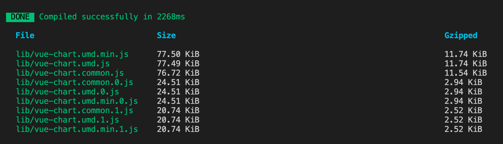
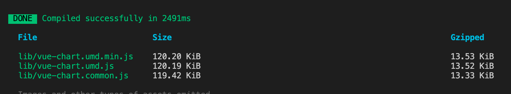

Vue CLI build --target lib 时如何避免打包成多个umd.js文件
这篇文章发布于 2020/11/30，归类于 前端工程化
标签：
怎么避免生成多个umd.js，如何避免打包成多个umd.js
Vue CLI 项目中，一般我们使用的是 npm run build 来构建项目，并发布到线上。当我们写组件/工具库的时候，就需要使用 --target lib 参数了。
打包成库（Library）与普通的构建应用不一样，它会在 dist 目录下生成对应的 umd.js 文件，也就是通用模块定义的 js 文件。一般用于组件/工具库的入口文件，我们可以在静态 html 以及 Vue CLI 等项目中直接引入并使用。如果不进行构建，只能在 Vue CLI 项目中使用，无法引入一个 js 直接使用。
在项目中，运行打包命令
# 打包成库 Library，指定入口为 src/index.js，构建后生成目录为 lib 目录
# --mode lib 不单独生成css，样式内联
# --target lib 打包形式为 lib
vue-cli-service build --mode lib --target lib --dest lib src/index.js执行效果如下

一般我们把 *.umd.js 引入到项目中就可以使用。但这里分包了。将 *.umd.js 文件，分了好几个小包。在普通 html 文件里面引入是可以正常运行的。他会根据 umd.js 找到需要加载的其他分包并加载。但在vue项目中只引入 *.umd.js，其他分包不会打包到项目中，导致无法运行。
其实看上面的图，js 文件超过 77KB 左右就分块了。Gzipped 压缩后不到 12KB，我们完全可以将这些打包成一个 umd.js 文件，而不需要分多个文件。
这里借助 webpack 的一个插件来配置 Chunk 数量，maxChunks 设置为 1，只打一个包，不分多个 js 文件。在 vue.config.js 里修改webpack 的配置。
// vue.config.js
const webpack = require("webpack");
module.exports = {
configureWebpack: {
plugins: [
// 限制只打一个包，不分Chunk
new webpack.optimize.LimitChunkCountPlugin({
maxChunks: 1
})
],
// 当库里面引入了比较大的文件时，为了不影响主包大小，需要设置下该包使用外部引入
externals: {
echarts: "echarts"
}
}
};这样设置后，再重新打包就正常了，只有一个包，各平台就都没问题了。而且 gzip 压缩后也才 14KB 不到。如下图

扩展：
如果想要了解对于 vue-cli 打包 vue-cli-service --target lib 的具体执行，可以看 Vue CLI 源码
// @vue/cli-service/lib/commands/build/index.js
// Vue CLI源码，bulid 入口文件，lib时，配置处理
// resolve raw webpack config
let webpackConfig
if (args.target === 'lib') {
webpackConfig = require('./resolveLibConfig')(api, args, options)
}
// .....
else {
webpackConfig = require('./resolveAppConfig')(api, args, options)
}
// @vue/cli-service/lib/commands/build/resolveLibConfig.js
// Vue CLI源码，lib 时 输入、输出文件配置
rawConfig.output = Object.assign({
library: libName,
libraryExport: isVueEntry ? 'default' : undefined,
libraryTarget: format,
// preserve UDM header from webpack 3 until webpack provides either
// libraryTarget: 'esm' or target: 'universal'
// https://github.com/webpack/webpack/issues/6522
// https://github.com/webpack/webpack/issues/6525
globalObject: `(typeof self !== 'undefined' ? self : this)`
}, rawConfig.output, {
filename: `${entryName}.js`,
chunkFilename: `${entryName}.[name].js`,
// use dynamic publicPath so this can be deployed anywhere
// the actual path will be determined at runtime by checking
// document.currentScript.src.
publicPath: ''
})